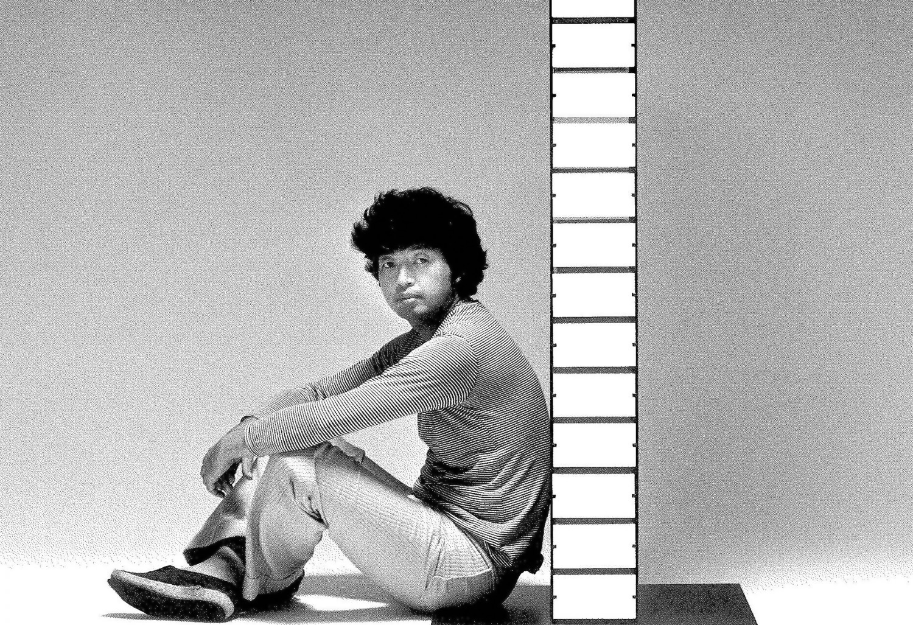
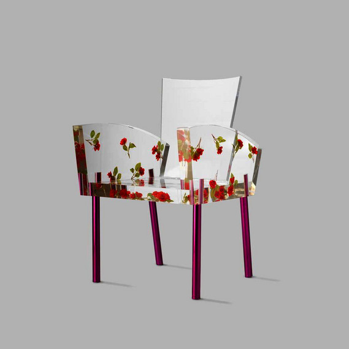
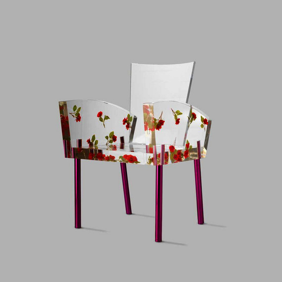

HOW HIGH THE MOON
This designer chair was created by Shiro Kuramata in 1986 and takes its name from Ella Fitzgerald's jazz song. Although it may look uncomfortable, it is surprisingly comfortable thanks to its design characterised by soft, enveloping lines.
ContactThe chair


The Designer
The concept
The result of a quest for transparency and visual lightness, achieved through metal lattice structures that blend harmoniously into the surrounding environment, highlighting the innovative use of metal. The quest for lightness is a recurring theme in many of his designs, especially in the design of chairs, among which we can mention: Miss Blanche, the Sing chair, Sing, Sing and Glass chair.

 
